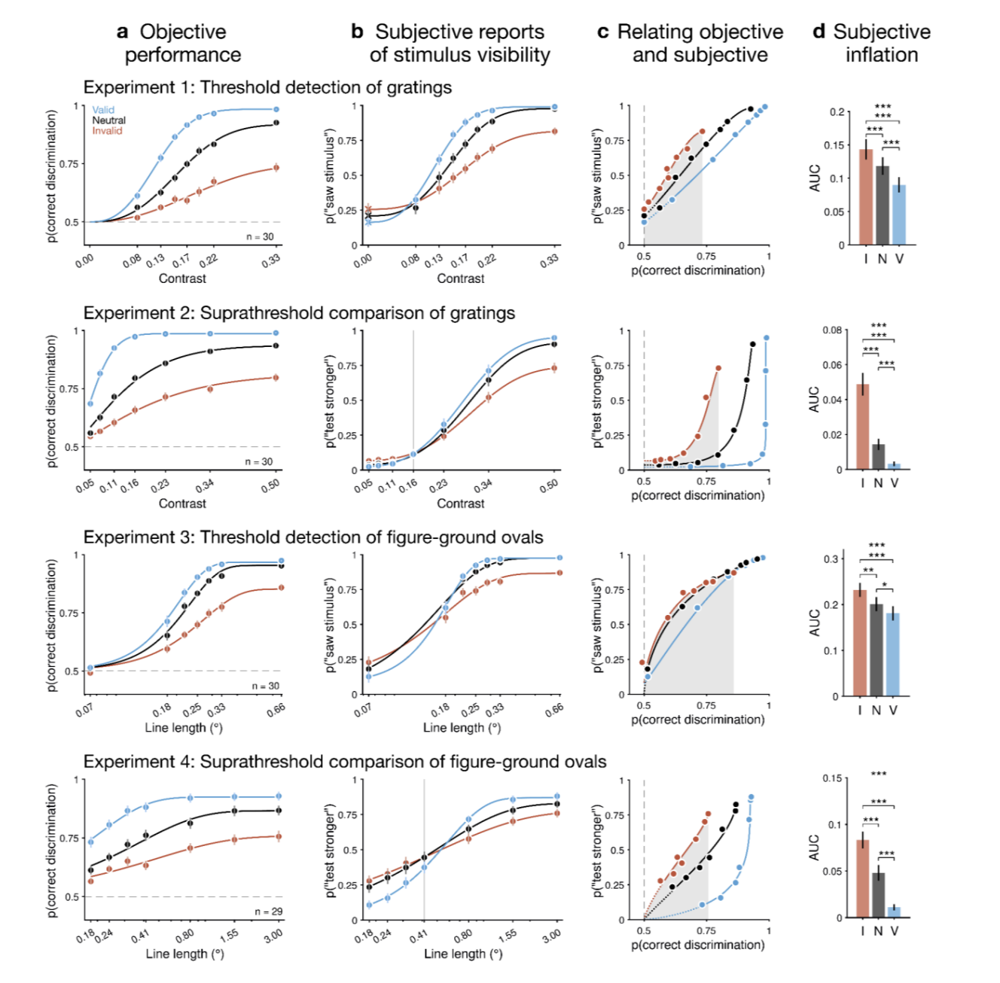
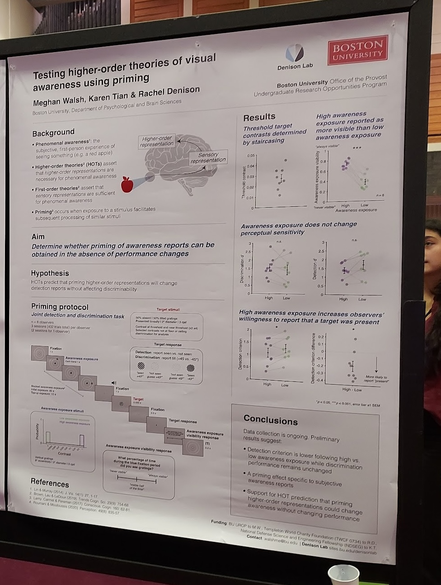

As an undergraduate researcher in Dr. Rachel Dension's lab, under the mentorship Dr. Karen Tian, I contributed to two studies investigating the decoupling of subjective visual awareness and objective visual performance:
A four-experiment, two-site adversarial collaboration on subjective inflation
Tian, K. J., Maniscalco, B., Epstein, M. L., Shen, A., Castaneda, O. G., Kurosawa, T., Motzer, J. A., Olsson, E., Russell, E. E., Walsh, M. E., Wang, J., Awrang Zeb, T. B., Brown, R., Lamme, V. A. F., Lau, H., He, B. J., Brascamp, J. W., Block, N., Chalmers, D., … Denison, R. N. (2025). When awareness outstrips performance: critical tests of subjective inflation under inattention. bioRxiv, 2025.07.03.661972. https://doi.org/10.1101/2025.07.03.661972 (preprint)
Vision Sciences Society Annual Meeting Published Abstract | September 2024
Tian, K., Maniscalco, B., Epstein, M., Shen, A., Graham Castaneda, O., Arzu, G., Kurosawa, T., Motzer, J., Olsson, E.,
Romero, L., Russell, E., Walsh, M., Wang, J., Bek Awrang Zeb, T., Brown, R., Lamme, V., Lau, H., He, B., Brascamp, J.,
… Denison, R. (2024). Attention robustly dissociates objective performance and subjective visibility reports. Journal of
Vision, 24(10), 408-408. https://doi.org/10.1167/jov.24.10.408
ABOUT THE EXPERIMENT
Across four psychophysics experiments and roughly 120 participants tested
in parallel at BU and UC Irvine, the team tracked covert spatial attention
against both an objective orientation-discrimination task and a subjective
visibility judgment, spanning stimuli from barely-detectable to clearly visible.
Researchers who favor competing theories of consciousness agreed in advance on the
predictions each theory would need to survive.
RESULTS
Inattention inflated subjective stimulus visibility in every experiment and the
effect was strongest for clearly-visible stimuli, not just faint, near-threshold
ones as prior work had assumed.
MY CONTRIBUTION
As an undergraduate research assistant on this project, I helped design and pilot
the psychophysical experiments, ran data collection sessions with human participants,
and operated eye-tracking equipment to monitor fixation and gather behavioral data used
in the analyses.

Vision Sciences Society Annual Meeting Published Abstract | August 2023
Tian, K., Walsh, M., & Denison, R. (2023). Dissociating subjective and objective awareness reports using priming.
Journal of Vision, 23(9), 4737-4737. https://doi.org/10.1167/jov.23.9.4737
ABOUT THE EXPERIMENT
First-order theories assert that first-order representations in
sensory brain regions are sufficient for phenomenal awareness, whereas higher-order theories
(HOTs) assert that higher-order representations tracking first-order ones are necessary.
According to HOTs, priming higher-order neural representations will change awareness
reports but not performance. This study aimed to determine whether priming of awareness
reports can be obtained in the absence of performance changes.
To test this, participants ran a combined detection-and-discrimination task on a briefly-presented,
near-threshold grating, tilted ±45°. Before each block, they were exposed to a stream of peripheral
gratings set to be either mostly visible or mostly invisible, priming a "high-awareness" or
"low-awareness" state, and we measured whether that priming shifted their detection criterion,
their discrimination accuracy, or both.
RESULTS
Recent visual exposure makes detection criterion more liberal but does not change detection sensitivity.
Subjective and objective measures of awareness can therefore be dissociated using priming.
MY CONTRIBUTION
I designed and piloted the experiment with my mentors, collected behavioral data,
ran analyses on reaction time and accuracy. I was awarded a stipend through
Boston University's Undergraduate Research Opportunity Program (UROP)
to conduct this research during the summer term, gaining hands-on
experience in study design, data analysis, and academic presentation.
I presented a poster at UROP's 2022 Symposium.
View my UROP Abstract
